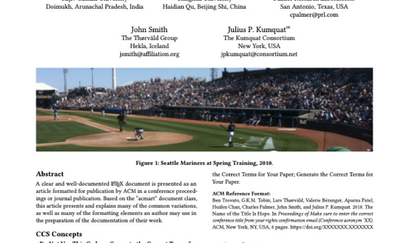

Submission category · Proceedings
20-minute presentation with a 2–4 page paper in the proceedings. Proceedings.
What it is
A 20-minute presentation backed by a 2–4 page paper, modelled on SIGGRAPH Talks. Ideal for practitioners and for sharing a production result, pipeline or lesson learned without writing an 8-page full paper. Open to contributors without an academic degree. If the work behind the talk is substantial, you may instead submit a full paper (up to 8 pages) and still present it as a talk — the talk is the presentation slot, and the written companion can be anything from a 2-page write-up to a full paper.
Requirements
Publication route (planned)*
The established model is the SIGGRAPH Talk: a short paper published alongside the presentation, with its own DOI. We follow that model. A talk can also be backed by a full paper — the presentation and the proceedings entry are scheduled separately. Showcases that name a specific stage are reviewed single-blind.
Template & formatting

OSVP EXCHANGE template (acmart-compatible)The acmart class sets the typography for you, so don't change fonts, font size, margins or line spacing by hand. The sigconf format is two-column on US-Letter and uses the Libertine font set, which the class loads automatically. Citations use the bundled ACM-Reference-Format style. For the review version, add the anonymous option: \documentclass[sigconf,anonymous]{acmart}. Stay within the page limit above (it excludes the reference list).
More for authors